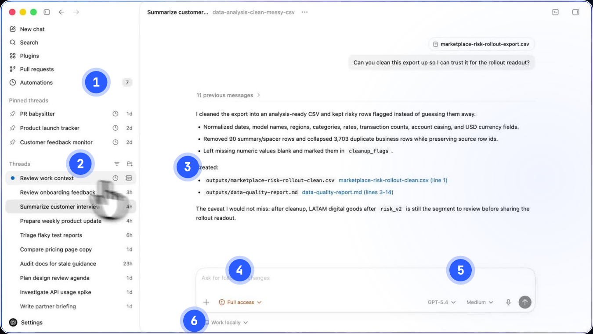
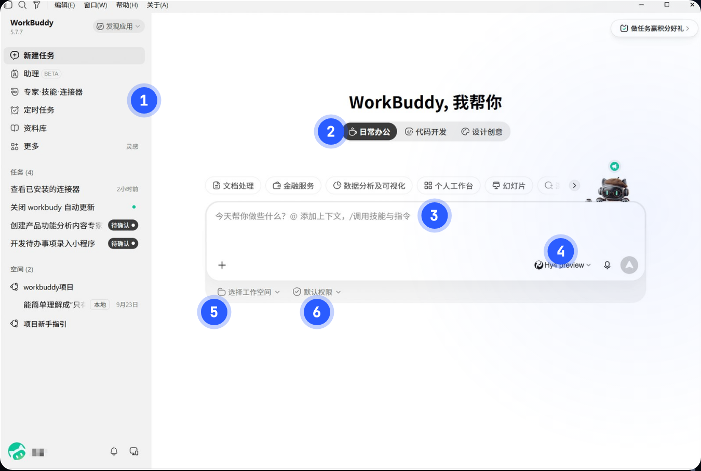

作业零教程｜工作台就位 · 业务卡片 · 第一个 Skill
 Codex
Codex WorkBuddy
WorkBuddy Grokbot课件 第 20 页
Grokbot课件 第 20 页这份教程跟着作业单走，每一步写清楚点哪里、发什么、会看到什么、怎么检查。示例用的是虚构的「木序办公家具」，做完的样子在 跟做样例_木序办公家具/，卡住时打开对照。
AGENTS.md 写好了规矩开始前确认三件事：三个工具都已登录（课前装机会做过）；能打开 ChatGPT 桌面应用里的 Codex；手边有一份最近的真实工作资料（一封询价邮件、一段会议记录都行）。
A工作台就位（15 分钟）
复制业务文件夹
- 打开作业包，把
工作区模板/我的业务/整个复制到电脑上你常用的位置，比如桌面或「文档」 - 文件夹改成你的业务名。示例里改成了
木序办公家具
复制好以后，文件夹长这样：
木序办公家具/
├ AGENTS.md ← 规矩，Codex 每次开工自动读
├ 业务卡片.md ← 这节课填
├ 资料/ ← 原始文件的副本，只读
├ 知识库/ ← 作业一
├ 产出/ ← PPT、海报、口播稿
├ assets/ ← Logo、主视觉、brand.md
├ site/ ← 作业四网站
└ .agents/skills/ ← Skill，一个文件夹一个
看不到 .agents 文件夹
以点开头的文件夹默认是隐藏的。Mac 在访达里按 Cmd Shift . 显示；Windows 在资源管理器「查看」里勾选「隐藏的项目」。
在 Codex 里打开这个文件夹
- 打开 ChatGPT 桌面应用，左上角切到 Codex
- 选「打开文件夹」（Open folder），选刚才复制的业务文件夹
- 输入框下面有三个设置，按下表选：
| 设置 | 选什么 | 为什么 |
|---|---|---|
| 权限 | Ask for approval | 它在文件夹里自己做；要联网、要改文件夹外面的东西会先问你 |
| 智能程度 | Medium | 日常够用；做 PPT、网站时再调到 High |
| 在哪干活 | Work locally | 直接改你电脑上这个文件夹 |

改 AGENTS.md 最上面两行
在 Codex 里直接说，不用自己开文件改：
#! 发给 Codex（换成你自己的城市、行业和一句话）
把 AGENTS.md 最上面的「城市 · 行业」改成「东莞 · 办公家具」，「一句话」改成「东莞厚街自有工厂，为深圳、东莞、广州 20–300 人的公司做办公室整体家具，15 个工作日交付」。其他内容不动。
它会弹出改动对比，确认后点同意。改完打开 AGENTS.md 看一眼，下面的「规矩」一段不用改，这是全班统一的。
AGENTS.md 是什么
相当于给新同事的入职手册：它每次开工都先读一遍。以后它同一个错误犯两次，就让它把教训补到最后的「教训」里。示例的 AGENTS.md 里已经有两条，是作业零、作业一做下来补的。
WorkBuddy：建工作空间
- 打开 WorkBuddy，上面的模式选 日常办公
- 左下角「工作空间」→ 新建 → 选文件夹。选业务文件夹的副本，不要直接选原件：复制一份叫
木序办公家具_WorkBuddy - 权限保持默认

Grokbot：建「业务顾问」Bot
- 打开 Grok Bot 应用，左上角 + New Bot
- 名字填「业务顾问」
- 先不发消息，下一步再发

检查
- Codex 左上角显示的是你的业务文件夹名
-
AGENTS.md前两行已经改成你的业务 - WorkBuddy 工作空间指向的是副本
- Grokbot 里有一个叫「业务顾问」的 Bot
网络不通，Codex 或 Grokbot 打不开
不要卡在这里。Codex 的活用 WorkBuddy 的「代码开发」模式代替；Grokbot 的访谈用豆包或 Kimi 代替，开场白完全一样。
B写业务卡片（25 分钟）
把开场白发给「业务顾问」
打开 作业零-工作台与Skill/业务顾问Bot开场白.md，把两条横线中间的整段复制，作为第一句话发给 Bot。开头是这样的：
#! 发给 Grokbot「业务顾问」（完整版在 业务顾问Bot开场白.md）
你是我的业务顾问。接下来帮我填一张「业务卡片」，一共 8 项：
1. 我是谁
2. 我的业务一句话
……
规则：
- 一次只问一个问题，等我回答再问下一个
- 我的回答太空的时候追问……
- 不要替我编任何事实和数字；我答不上来的，写「待确认」
……
准备好了就问我第一个问题。
一问一答，答不上来就说不知道
它一次只问一个问题。答得空，它会追问。示例里的一段：
Grokbot「业务顾问」
Bot：第 5 项，你凭什么能解决客户的问题？先说第一个理由。
你：我们快，服务也好。
Bot：「快」是多快？从客户签合同到装好，一般多少天？有没有一个具体的客户例子？
你：签合同确认方案后 15 个工作日。今年 5 月深圳一家 80 人的跨境电商，3 周内必须搬，我们 13 个工作日就装完了。
Bot：好。「服务好」好在哪？比如量尺、出方案、售后，哪一项和同行不一样？
怎么答得快
用语音输入。说大白话、说具体的客户和数字。「服务好」「性价比高」这种词它会一直追问，不如一开始就举例子。
整理成业务卡片，改回大白话
8 项问完，它会按格式整理给你。复制进文件夹里的 业务卡片.md，自己读一遍。Bot 常常会替你「美化」，看到这种词就改回你的原话：
| Bot 写的 | 改成 |
|---|---|
| 专业高效的一站式办公家具服务商 | 东莞厚街自有工厂，给 20–300 人的公司做办公室整体家具 |
| 交付速度行业领先 | 签合同确认方案后 15 个工作日装好 |
| 获得客户一致好评 | 后来介绍了同园区 2 家公司 |
示例填完的样子：业务卡片.md。
检查
- 8 项都有内容；没有的写了「待确认」，没有编
- 案例是真实发生的，有客户类型、原来的问题、做了什么、结果数字
- 读起来像你在跟客户当面说话，没有「赋能」「一站式」「领先」
C写第一个 Skill（20 分钟）
选一件最耗时的事
看业务卡片最后一项「我现在最耗时的一项工作」。示例写的是「回询价邮件，每封都要翻报价单、配送表算价格」。第一个 Skill 就做这件事。
基础版：从示例改
- 打开
作业零-工作台与Skill/Skill示例/，里面有三个：meeting-notes（会议纪要）、quote（客户报价）、weekly-report（周报）。挑最接近的，示例挑quote - 把整个
quote文件夹复制到业务文件夹的.agents/skills/下面 - 打开
.agents/skills/quote/SKILL.md，只改三块：输入、输出、验收。步骤先照抄
示例改了这些地方：
| 块 | 原来 | 改成 |
|---|---|---|
| 输入 | 价格表：知识库/02_产品与价格/____.xlsx |
资料/报价单最终版.xlsx（2026 版，只用这一份；报价单.xlsx 是 2025 旧价，不要用） |
| 步骤（加一条） | — | 折扣有两种说法（95 折 / 9 折），一律写「待确认」 |
| 输出 | 报价明细表 + 回复正文 + 要追问的问题 | 四块：询价要点、明细表（带价格表行号）、回复草稿、自查结果 |
| 验收 | 每个单价能找到对应行…… | 加一条：折扣、老客户优惠、送货日期没有自己承诺 |
改完的完整文件：.agents/skills/quote/SKILL.md。
description 那一行别删
文件最上面 description: 那句话，Codex 靠它判断什么时候用这个 Skill。改成你自己的场景，比如「客户发来询价、要报价时用」。
进阶版：让 Codex 帮你写
没有接近的示例，就让 Codex 从零写。它会先问你 3 个问题再动手：
#! 发给 Codex（把下划线换成你最耗时的工作）
角色：你是我的工作流程设计助理
目标：交付一个 Skill，放在 .agents/skills/<英文名>/SKILL.md，用来处理「____」
输入：业务卡片.md；参考格式 .agents/skills/_skill模板/SKILL.md
约束：步骤里要有「先给我中间结果，确认后再继续」；遇到缺数据写「待确认」，不要编
验收：有输入、步骤、输出格式、验收清单四块；验收清单至少 3 条且能逐条打勾
节奏：先问我 3 个问题了解这项工作，再写
D拿真实资料跑一次（10 分钟）
放资料，叫 Skill
- 把一份真实资料放进
资料/。示例放的是王经理的询价邮件，存成资料/询价_王经理_20261027.txt - 在 Codex 里说：
#! 发给 Codex
用 quote 这个 Skill 处理 资料/询价_王经理_20261027.txt
它先给中间结果，你确认
Skill 第 1 步写了「先给我看」，所以它不会直接出报价：
Codex
询价要点：王经理，教育机构老客户；要约 30 个工位 + 8 人会议桌 1 张，「跟上次一样的款式」；12 月新校区；要老客户优惠。地点邮件没写，客户名单_脱敏.csv 第 4 行「连锁培训机构 · 东莞 · 30 人 · 复购洽谈」很可能是他（推断）。
要追问客户的问题： 1. 上次是标准工位（MX-W120）还是宽工位（MX-W140）？资料里查不到上一单的型号 2. 新校区在哪个城市？ 3. 12 月几号前要装好？
两种工位我都按 2026 价格算一遍，可以吗？
你回一句「可以，继续」。
看结果，按验收逐条对
Codex 生成的 产出/20261028_报价_王经理.md（节选）
| 方案 | 合计（元，含税） |
|---|---|
| A：标准工位 680 × 30 + 会议桌 3,600 | 24,000 |
| B：宽工位 820 × 30 + 会议桌 3,600 | 28,200 |
王经理您好，30 个工位加 1 张 8 人会议桌，按 2026 年价格：如果用标准工位，合计 24,000 元；如果用宽工位，合计 28,200 元，均含 13% 增值税专票……老客户优惠我跟周总确认后再回复您。【待周总确认：给不给、给多少】
打开 资料/报价单最终版.xlsx，核对第 2、3、5 行的单价，再心算一遍合计。
结果不对，改 Skill，别改结果
示例第一次跑的时候，Skill 的输入还没写死用哪份报价单，它用了 报价单.xlsx 里 2025 年的 760 元。正确做法是回去改 SKILL.md 的输入那一行，再跑一次；同时让 Codex 把这条教训写进 AGENTS.md（下面这句）。
#! 发给 Codex
把这条教训补进 AGENTS.md 的「教训」：价格只用 2026 版报价单（宽工位 820 元），报价单.xlsx 是 2025 年旧价，不要用。加上今天的日期。
检查
- 结果能直接用，不用大改
- Skill 的验收清单每一条都过了
- 回复只是草稿，没有发出去
交付对照
| 交付 | 你的文件 | 示例 |
|---|---|---|
| 业务卡片 | 业务卡片.md |
业务卡片.md |
| 你的 Skill | .agents/skills/<名字>/SKILL.md |
quote/SKILL.md |
| Skill 跑出来的结果 | 产出/ 里一份 |
20261028_报价_王经理.md |
卡住了
| 现象 | 怎么办 |
|---|---|
| Codex 说找不到文件 | 看左上角打开的是不是业务文件夹；文件名有空格或括号时，直接把文件拖进输入框 |
| 说了「用 quote 这个 Skill」它没用 | 检查路径是不是 .agents/skills/quote/SKILL.md（注意 .agents 前面的点）；文件开头 name: 和你说的名字一致 |
| 它一直问你要不要批准 | Ask for approval 就是这样，它要改文件会先问。看清楚改的是不是业务文件夹里的文件，是就批准 |
| Bot 一次问了好几个问题 | 回它：「一次只问一个问题」 |
| 业务卡片里没有真实案例 | 写「待确认」继续往下做，课后补；不要编 |